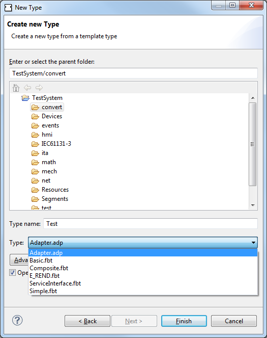

The IEC 61499 defines different element types like Device Types, Resource Types, Function Block Types, Data Types and Adapter Types. In order to manage the element types, i.e. to create, delete or modify element types, the 4DIAC-IDE has to be changed to the Type Management perspective. However for ease of use many type editing and creation tasks can also be performed in the System perspective using the type navigators.
to create new Function Block Types you have two options
Follow the instruction in the creation wizard. In the following wizard the Function Block name as well as the type and the group in the type library have to be specified.
|
 |
The Function Block Type Editor contains several tabs which allow the management (i.e. creation, deletion and modification) of types.
There is a set of tabs that are common to all function block types. They allow to modify the function block interface, the service sequences, and the general properties of a function block.


For basic function block types in addition to the general function block tabs there are editor tabs for modifying the internal variables, the algorithms, and the Execution Control Chart (ECC).
Depending on the selected algorithm type different algorithm editors are provided. Currently the most used algorithm language is IEC 61131-3 structured text. For this also syntax highlighting is provided.


For composite function block types in addition to the general function block tabs there are editor tabs for modifying the internal function block network.

For the service interface function block types there are no additional tabs to the general function block editor tabs.
In order to execute specified IEC 61499 Element Types the 4DIAC-IDE provides an export filter to generate C++ code which can be included in the FORTE development process. In order to export a Function Block Type, select either

Before exporting one or more Function Block Types the corresponding types and the output directory have to be chosen. Furthermore the version of the FORTE C++ format have to be selected.

After pressing the Next-Button a dialog window informs if the export to the FORTE C++ format was successful or not. If the output directory already contains an older version of the exported Function Block Type it is possible to overwrite the old file or to open a Merge Editor where manual merges can be performed.

Currently only the management (i.e. creation, deletion and modification) of Basic, Composite and Service Interface Function Block types as well as Adapter types is supported. The management of Device and Resource Types is currently not supported, Sub-applications are currently under development.
The Function Block tester tab is an type editor tab available for all Function Blocks. It allows to test the functionality of a Function Block by executing it on a target device selectable in the top part. After starting the test with the Start Testing FB button you can manually set input values of your FB, trigger input events and inspect the resulting output events and output data. Furthermore you can store input/output sequences and execute them to automatically test a certain functionality of your FB.